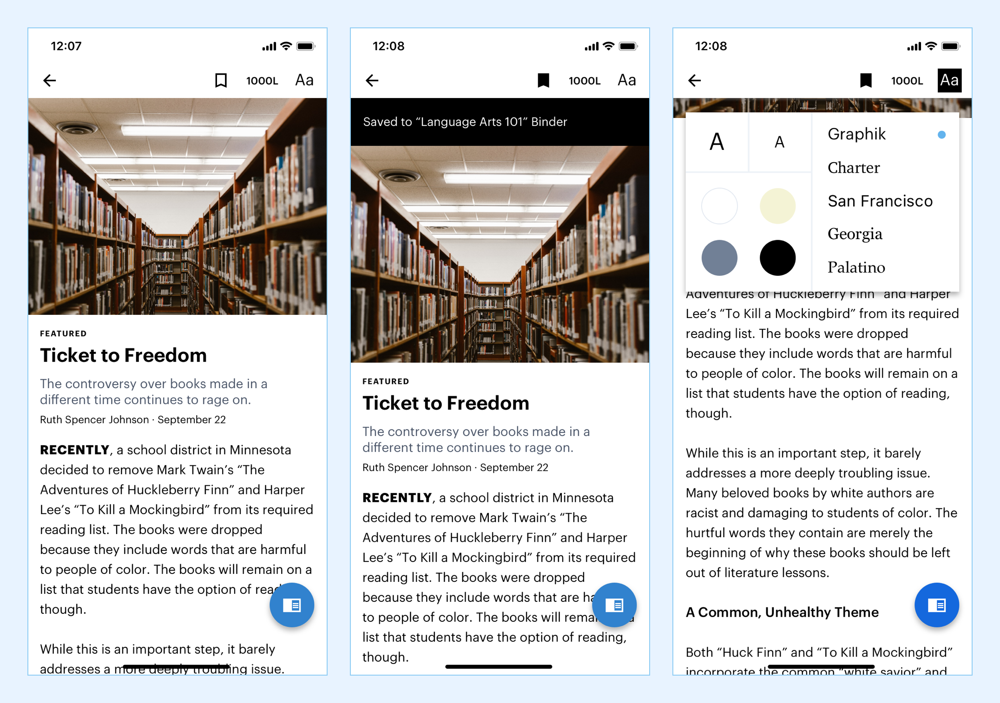

About the Project
As computers, not textbooks, became the way K-12 students learned, companies like Newsela began exploring how tapping into the internet could dramatically change the classroom. By generating unique reading-based curriculum through the aggregation of news articles and other online literature, Newsela moved classrooms towards more interactive mediums. My goal was to create a comprehensive redesign for the iOS Newsela Student app that reimagined the experience to improve clarity and increase student immersion in the content. Creating a more engaging experience would better align students with Newsela’s vision.
Duration
August 2019
Role & Team
Solo Project, For the Kleiner Perkins Design Fellows 2020 Challenge
Process
Research, Interviews, Visual/Interaction Design
The Background
As computers, not textbooks, became the way K-12 students learned, companies like Newsela began exploring how tapping into the internet could dramatically change the classroom. By generating unique reading-based curriculum through the aggregation of news articles and other online literature, Newsela moved classrooms towards more interactive mediums. My goal was to create a comprehensive redesign for the iOS Newsela Student app that reimagined the experience to improve clarity and increase student immersion in the content. Creating a more engaging experience would better align students with Newsela’s vision.
Across the country, schools had already taken great interest in Newsela; they were being used with over 20 million students and 1.8 million teachers across the country. They filled a gap that not many other companies were: aggregating safe and reliable web content for kids so that teachers didn’t have to spend their time scouring the web. Upon this, they’ve built a large library of excellent content and lessons built on that content.
The Problems
While Newsela didn’t make it to my classrooms in high school, I was familiar with the app and its concept. Other e-learning services such as Quizlet, Duolingo, and Canvas were commonplace in my high school experience. While those services were more convenient than traditional classroom tools, none of them ever convinced me to engage with them outside of the classroom, much less enjoy their service. Having personal experiences with these e-learning services have helped me understand the hurdles that Newsela has to overcome with its mobile app:
How do we create enjoyment amongst students when they engage in learning outside of the classroom?
To learn more, I tested the app myself by going through a few readings and completing a lesson. I quickly learned that Newsela didn’t need a conceptual rehash or a web-redesign. Their content aggregation and delivery was already excellent! After opening the app, I was able to bypass the sign in process and demo reading an article and taking a quiz. It was fascinating being able to change the reading level of my article, amongst other features. I then took the accompanying reading quiz and was not able to view my score (as I didn’t have an account). While I easily understood the concepts and promise of the app, design issues such as ambiguous buttons, a shaky article viewer, and a dull-looking quiz reminded me of the e-learning services in high school that I never quite connected with.

The Research and Findings
Along with testing the app myself, I also turned to my friends and classmates at my university for research. While they weren’t in the K-12 system, they weren’t too far removed from it to understand the apps purpose (and we are all students at-heart, regardless of age). In order to obtain useful feedback, I ran 10 students through the process of reading an article and completing a reading quiz.
Ultimately, it was clear that Newsela needed to magnify their platform’s identity in order to increase immersion and student enjoyment. Newsela was billed on being a departure from the textbook and pop-quiz of the traditional classroom, but at its core, it was still an educational language-arts service. Research showed me that a Newsela redesign had to emulate the moments of joy students felt while learning in the classroom while removed from it.

The Goals
Newsela had a robust platform filled with insightful modern content and a clear strategy. Redesigning their mobile app meant finding ways to improve the learning experience for students outside of the classroom.
How can we make the reading experience more personal, relevant, and explorative?
Improve the visual focus on content, user test articles to determine the most immersive delivery method, simplify interactions, and empower users when reading with more info.
How can we make quizzes, lessons, and writings feel enlightening?
Emulate “open book quizzes”, reduce confusion during quizzes, and encourage discovery and interaction.
The Redesign
It was important that I remember my place in the system during the design process. It wasn’t my job to rethink core features of Newsela or destroy app functions that I didn’t see necessary. Expressly, my goal was to redesign the reading and quizzing features of the Newsela student app. I began by mapping out their app flow and design problems within the app:
The user-flow kept nearly the same skeleton as before, different were the additional features that I would design in order to make the app more personal for each student. Fully writing-out the user-flow also made it apparent that most students likely understood how to use the app well, and that this redesign would need to be focused on refinement rather than restructuring.
Along with the reading screens, I explored different designs for onboarding and the home screen. It was important make broader visual changes in onboarding in order to expedite the process and allow students to use their class codes upon launch. The home screen had ample room for improvement; there were many opportunities to improve content delivery, and also offer more context. One important direction I pursued was an explorative, insightful feed. Many news apps and websites offer snippets of the article, subtitles, or brief factoids to improve scannablility. What if Newsela could add these snippets to their articles to improve discovery?
One of Newsela’s headline features was the ability to change the reading level of their articles on the fly. Consequentially, this was one of the most difficult features to theorize and test with users. There were ultimately two core issues:
1. Two finger swipes, if mis-timed slightly, usually scroll the screen rather than change the reading level.
2. Users who swiped with their right hands could not physically see the reading levels they were switching between.
To remedy this, I landed on a right-edge swipe that was easy to control (hopefully using haptic feedback in development) and was easy to view.
Outcomes
For onboarding, I explored different layouts during the wireframing stage, and ultimately settled on integrating Newsela’s branding into the onboarding.
Newsela’s current onboarding uses brief animations to showcase some of Newsela’s features; I wanted to turn the focus to the vast world of educational news content that they cover.
Drawing inspiration from their beautiful branding done by Gold Front, I used the Newsela “N” as a container for their features, with relevant figures and images as the background.
These showcased content in a more dramatic fashion that would draw attention to their features.
The largest change was the join code screen. The current app brings the user to an in-app web browser where they can enter their join code after three taps.
After learning through App Store reviews that students wanted to be able to enter their join codes more immediately, I decided to make it the primary action and add a new screen.
The join code screen lets students enter their join code and see their classroom match. Using large text for the code coupled with a box containing a picture of their class
helps the student immediately feel like they’re in an educational environment from launch.
My initial goals for the home screen were to fix their inefficient article layout and increase immersion.
To achieve this, I did away with their white text backgrounds and replaced it with more immersive gradient-filled images. I also implemented a new feature I called
“Insights”. Newsela already had excellent methods of synthesizing content, why not use that to display relevant facts and snippets from the article on the home screen?
Users could now see interesting information that could potentially draw them to explore, in addition, adding relevant articles could increase consumption outside of classroom assignments.
Using different spacing between elements helps imply whether or not they are related.
I also rearranged the tab bar. It was unnecessary to have a separate search tab when I could move it to the home screen.
Additionally, I removed tab bar labels in favor of larger headers at the top left corner of the screen.
The larger text size for “Latest” contributes to the feeling that one is reading a relevant and modern publication.
The reading screen redesign was based around the idea of a new floating action button. As outlined above, this button disappears during scroll and when the user continues their scroll down on the page, and reappears when they scroll upwards. I also made the save feature more prominent by moving it to the navigation bar and giving it a black fill when selected. The student can more easily see where they have saved their article with a small non-distracting top ribbon. While I did not focus on the redesign of the binder tab, tapping on the ribbon would presumably lead the user to that tab. I added a new text settings menu to help students refine their reading experience. The current app only offered students a single text size; offering them new sizes, potentially more readable fonts, and new text backgrounds helps Newsela better adjust to the needs of all students.
Plenty of extra functionality was added throughout the redesign. Amongst them were a better image view on a long press, and also a more clear indicator for when an article is saved.
The Fab and the Fact Sheet
By moving most of the bottom app bar actions to a disappearing floating action button, students would not be distracted by UI elements when reading, and can focus on their material. In addition, most mobile users can easily learn (or are already familiar with) the disappearing behavior of the FAB due to its prominence in other popular applications. I made the quiz the main action by adding a blue background to its option in the expanded menu as it was the most accessed option.
One of my primary goals was to help students feel more enlightened and empowered during the entire read-quiz flow. One such step towards achieving this goal was giving students greater access to helpful information within the app. Identifying important words and allowing students to long press those words to receive relevant information was a fun way to increase information access. These fact sheets were based off of components that existed within Google’s Material Design, and would go a long way towards helping students feel empowered.
The Newsela quizzing experience had poor type hierarchy and was cluttered with redundant actions. Reducing the amount of possible actions and increasing the contrast between questions and answers helps keep quizzes visually interesting. I also adopted a blue box to hold the quiz question and elements. This would be maintained across all screens containing quizzes or writing prompts, helping keep this section more visually consistent. The new quiz split-view is also not scrollable, reducing the option to annoyingly scroll the questions and answers.
I also redesigned the annotation process, making them clearer and able to be created from anywhere.
Allowing users to view annotations and facts during their quizzes gives them more information and analysis about the article,
helping them think and write more effectively. I made the facts turn into pop-ups rather than a sheet to
avoid conflicts with the quiz sheet that was already on the screen.
In addition, not showing the entirety of the fact
encourages students to open and read the fact, whereas otherwise they may have skipped it entirely.
Finally, I addressed one of the primary issues described on the Newsela Student Apps' iOS App Store reviews: accidentally closing their quiz.
Rather than allow the "X" button to immediately close the quiz, I decided to move the quiz to a persistent "Resume Quiz" button at the bottom of the article.
This serves as a non-intrusive reminder and helps users make a more informed choice on if they actually want to exit their quiz.
The End
Patience and Humility
Redesigning the Newsela Student app was a test of my patience and humility. Often, all I want to do is open a fresh Figma file, create a new artboard, and start designing. I had to remind myself to slow down as much as I could in order to avoid going too far down a design rabbit hole before considering feasibility and user experience. Thankfully I was surrounded by individuals that were close matches to my user base, so I could constantly go back and forth between the drawing board and their insights.
Designing without feedback can be a trap waiting to snag me when my ego is feeling comfortable. I began this project with an idea for a final design already in mind, and was reminded quickly during online and user research that those ideas would have to change. There were plenty of times during the process where I went to users believing my design was flawless, only to receive feedback that forced me to rethink the core of my design. T his repetitive process ensured that I was always partially thinking from a user’s standpoint. Even as the project neared a close, simply asking my roommates to look at the app on their phones was enough to generate important insights that helped me better achieve my initial goals.
Next Project